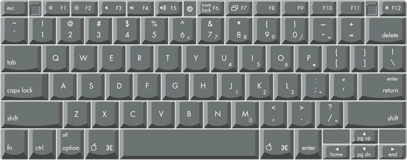
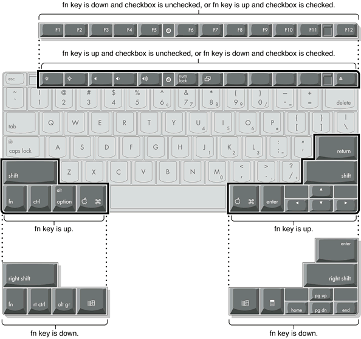

Figure 3-5 shows the actual appearance of the keyboard. Figure 3-6 shows the alternate modes of operation of the function and control keys. Figure 3-7 shows the embedded numeric keypad.
Figure 3-5 Keyboard layout
Figure 3-6 and Figure 3-7 include duplicate versions of some keys in order to show their alternate modes of operation. In some cases, the alternate key captions shown in the figures do not appear on the keyboard. For the actual appearance of the keyboard, refer to Figure 3-5.
Figure 3-6 Alternate operations of function and control keys
Figure 3-7 Embedded numeric keypad operation
![[image: ../art/iv08.gif]](../art/iv08.gif)